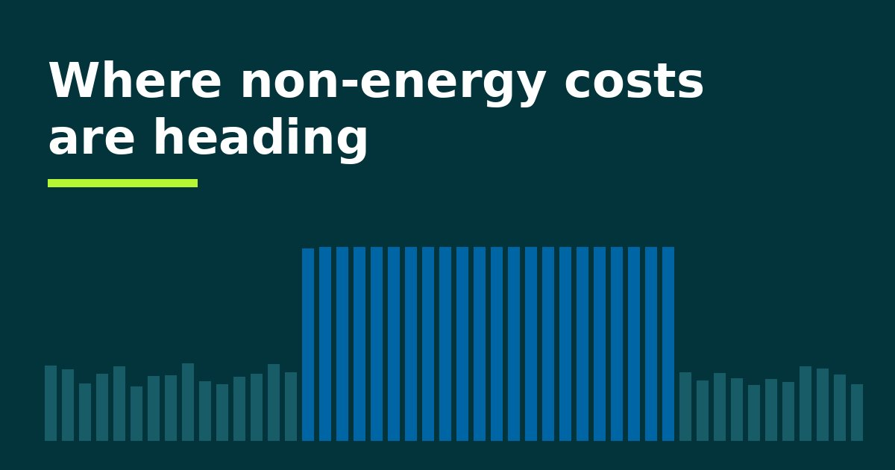

A business electricity price has five parts: the wholesale energy, network charges for moving it, policy costs that pay for low-carbon generation and a secure supply, taxes, and the supplier's own costs and margin. For a business using 500 MWh a year, the network and policy charges we can work out from published 2026/27 rates come to about 9.3p/kWh. That is about a third of the 27.67p/kWh that businesses of that size paid on average in April to June 2026.1
The five parts
Wholesale energy
The electricity itself, bought on the wholesale market by your supplier. Often called the "commodity" cost.
Network charges
- Transmission (TNUoS): the high-voltage national grid
- Distribution (DUoS): your local network
- Balancing (BSUoS): keeping supply and demand matched
Policy costs
- Renewables Obligation
- Contracts for Difference
- Capacity Market
- Nuclear RAB (Sizewell C)
- Feed-in Tariffs
Taxes
- Climate Change Levy on business energy
- VAT, usually at 20%
Supplier costs
Metering and data services, the supplier's running costs, the cost of managing risk, and its margin.
The non-energy parts, everything except the wholesale energy, are explained one by one in non-energy charges explained.
A worked example: 500 MWh a year
Take a business site using 500 MWh a year at low voltage, with 200 kVA of agreed supply capacity. It uses electricity the way our example office does, so 6.1% of its use falls between 4pm and 7pm on working days from November to February. That matters for the Capacity Market charge.
These are the charges we can calculate from the rates published for April 2026 to March 2027:
| Charge | Published rate | £/MWh | £ a year |
|---|---|---|---|
| Renewables Obligation | 0.472 certificates per MWh at £69.34 each | 32.73 | £16,364 |
| Capacity Market | about £308 per MWh used 4pm to 7pm on winter working days; 6.1% of this site's use | 18.74 | £9,370 |
| Balancing (BSUoS) | £13.74/MWh to September 2026, then £12.49/MWh | 13.12 | £6,558 |
| Transmission (TNUoS) | £14.38 a day for a low-voltage site with 150 to 250 kVA of capacity | 10.50 | £5,249 |
| Climate Change Levy | 0.801p/kWh | 8.01 | £4,005 |
| Contracts for Difference | £0 to £10.56/MWh, set each quarter and adjusted in between | 5.44 | £2,719 |
| Nuclear RAB (Sizewell C) | £3.68 to £5.15/MWh, set each quarter | 4.25 | £2,125 |
| Total | 9.3p/kWh | 92.78 | £46,390 |
Sources for each rate: Renewables Obligation2,3, Capacity Market4,5, balancing6, transmission7, Climate Change Levy8, Contracts for Difference and nuclear RAB4. The CfD and nuclear RAB figures are averages of the rates in force through the year, weighted by days; the Capacity Market figure is the year's total payments divided by the electricity used in the charging periods. Both are our calculations.
What the example leaves out
- Wholesale energy. It depends on when your supplier bought it and on your contract. See ten years of prices.
- Distribution charges. They depend on your region, your connection and when you use electricity. Each network operator publishes its own rates.10
- Supplier costs and margin, including metering.
- VAT. Most business electricity is charged at the standard rate of 20%. A lower rate applies to charities' non-business use and to sites using no more than 33 kWh a day on average. From 1 October 2026 to 30 June 2027 those qualifying supplies in Great Britain are zero-rated.9
Suppliers handle non-energy charges differently. Some fix them for the length of the contract, others pass changes straight through, and some show them as separate lines on the bill. Your contract should say which.
Why half-hourly data matters here
Two of these charges depend on when you use electricity. The Capacity Market charge is based entirely on use between 4pm and 7pm on working days from November to February.5 Distribution charges usually have different unit rates for different times of day. Your half-hourly data shows exactly how much you use in those hours, and what could move.
Sources
- Department for Energy Security and Net Zero: Gas and electricity prices in the non-domestic sector, QEP tables 3.4.1 and 3.4.2 (29 September 2026)
- Department for Energy Security and Net Zero: Calculating the level of the Renewables Obligation for 2026 to 2027 (29 September 2025)
- Ofgem: Renewables Obligation buy-out price and mutualisation threshold and ceilings 2026 to 2027 (31 March 2026)
- EMR Settlement: Key figures for payments 2026/27 (CfD and nuclear RAB levy rates, Capacity Market payments)
- EMR Settlement: G15 Capacity Market supplier payments guidance
- NESO: BSUoS final tariffs for 2026/27 (December 2025)
- NESO: Final TNUoS tariffs for 2026/27 (January 2026) and tables
- HM Revenue and Customs: Climate Change Levy rates (updated 27 November 2025)
- HM Revenue and Customs: VAT on fuel and power (VAT Notice 701/19, updated 28 October 2026)
- Ofgem: Targeted Charging Review decision (December 2019)
- EMR Settlement: Contracts for Difference explained
- EMR Settlement: Nuclear RAB
- Ofgem: Feed-in Tariffs (FIT)
Questions people ask
What are non-energy costs on a business electricity bill?
Everything except the wholesale energy: network charges (transmission, distribution and balancing), policy costs (the Renewables Obligation, Contracts for Difference, Capacity Market, nuclear RAB and Feed-in Tariffs) and the Climate Change Levy.
How much of a business electricity price is non-energy?
For our example 500 MWh-a-year site, the network and policy charges we can calculate from published 2026/27 rates come to about 9.3p/kWh, before distribution charges, supplier costs and VAT. That is about a third of the 27.67p/kWh average price for businesses of that size in April to June 2026.
What VAT rate do businesses pay on electricity?
Usually the standard rate of 20%. Charities' non-business use and very small supplies (no more than 33 kWh a day on average) qualify for a lower rate, which is 0% in Great Britain from 1 October 2026 to 30 June 2027.
Read next

Non-energy charges explained
Network charges, policy levies and taxes, one by one.
Read the guide
Ten years of business electricity prices
From 2015 to 2026, and what drove the changes.
Read the guide
Where non-energy costs are heading
Published forecasts and decisions for 2027 and beyond.
Read the guide